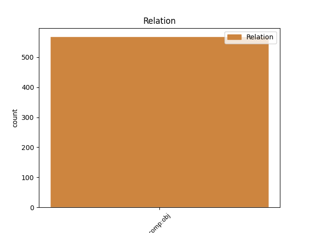
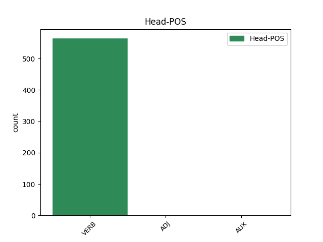
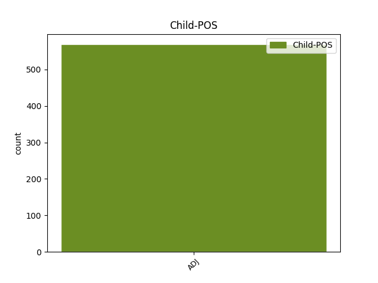

Distribution of features within this leaf



Agreement Rules sorted by frequency.
- When the dependent token is the direct object complements(comp:obj) of the head token, and the dependent token is ADJ.
1 καὶ _ _ _ _ 0 _ _ _
2 ἐδόθη _ _ _ _ 0 _ _ _
3 αὐτῷ _ _ _ _ 0 _ _ _
4 στόμα _ _ _ _ 0 _ _ _
5 λαλοῦν λαλέω VERB V- Case=Nom|Gender=Neut|Number=Sing|Tense=Pres|VerbForm=Part|Voice=Act 0 _ _ _
6 μεγάλα μέγας ADJ A- Case=Acc|Degree=Pos|Gender=Neut|Number=Plur 5 comp:obj _ ref=REV_13.5
7 καὶ _ _ _ _ 0 _ _ _
8 βλασφημίας _ _ _ _ 0 _ _ _
9 καὶ _ _ _ _ 0 _ _ _
10 ἐδόθη _ _ _ _ 0 _ _ _
11 αὐτῷ _ _ _ _ 0 _ _ _
12 ἐξουσία _ _ _ _ 0 _ _ _
13 ποιῆσαι _ _ _ _ 0 _ _ _
14 μῆνας _ _ _ _ 0 _ _ _
15 τεσσεράκοντα _ _ _ _ 0 _ _ _
16 δύο _ _ _ _ 0 _ _ _
Disagree Examples:
1 καταπλώσαντας _ _ _ _ 0 _ _ _
2 γὰρ _ _ _ _ 0 _ _ _
3 μακρῇ _ _ _ _ 0 _ _ _
4 νηί _ _ _ _ 0 _ _ _
5 ἐς _ _ _ _ 0 _ _ _
6 Αἶαν _ _ _ _ 0 _ _ _
7 τε _ _ _ _ 0 _ _ _
8 τὴν _ _ _ _ 0 _ _ _
9 Κολχίδα _ _ _ _ 0 _ _ _
10 καὶ _ _ _ _ 0 _ _ _
11 ἐπὶ _ _ _ _ 0 _ _ _
12 Φᾶσιν _ _ _ _ 0 _ _ _
13 ποταμόν _ _ _ _ 0 _ _ _
14 ἐνθεῦτεν _ _ _ _ 0 _ _ _
15 διαπρηξαμένους διαπράσσω VERB V- Aspect=Perf|Case=Acc|Gender=Masc|Number=Plur|Tense=Past|VerbForm=Part|Voice=Mid 0 _ _ _
16 καὶ _ _ _ _ 0 _ _ _
17 τὰ _ _ _ _ 0 _ _ _
18 ἄλλα ἄλλος ADJ Px Case=Acc|Gender=Neut|Number=Plur 15 comp:obj _ ref=1.2.2
19 τῶν _ _ _ _ 0 _ _ _
20 εἵνεκεν _ _ _ _ 0 _ _ _
21 ἀπίκατο _ _ _ _ 0 _ _ _
22 ἁρπάσαι _ _ _ _ 0 _ _ _
23 τοῦ _ _ _ _ 0 _ _ _
24 βασιλέος _ _ _ _ 0 _ _ _
25 τὴν _ _ _ _ 0 _ _ _
26 θυγατέρα _ _ _ _ 0 _ _ _
27 Μηδείην _ _ _ _ 0 _ _ _
1 δευτέρῃ _ _ _ _ 0 _ _ _
2 δὲ _ _ _ _ 0 _ _ _
3 λέγουσι _ _ _ _ 0 _ _ _
4 γενεῇ _ _ _ _ 0 _ _ _
5 μετὰ _ _ _ _ 0 _ _ _
6 ταῦτα _ _ _ _ 0 _ _ _
7 Ἀλέξανδρον _ _ _ _ 0 _ _ _
8 τὸν _ _ _ _ 0 _ _ _
9 Πριάμου _ _ _ _ 0 _ _ _
10 ἀκηκοότα ἀκούω VERB V- Aspect=Perf|Case=Acc|Gender=Masc|Number=Sing|Tense=Past|VerbForm=Part|Voice=Act 0 _ _ _
11 ταῦτα οὗτος ADJ Pd Case=Acc|Gender=Neut|Number=Plur 10 comp:obj _ ref=1.3.1
12 ἐθελῆσαί _ _ _ _ 0 _ _ _
13 οἱ _ _ _ _ 0 _ _ _
14 ἐκ _ _ _ _ 0 _ _ _
15 τῆς _ _ _ _ 0 _ _ _
16 Ἑλλάδος _ _ _ _ 0 _ _ _
17 δι’ _ _ _ _ 0 _ _ _
18 ἁρπαγῆς _ _ _ _ 0 _ _ _
19 γενέσθαι _ _ _ _ 0 _ _ _
20 γυναῖκα _ _ _ _ 0 _ _ _
21 ἐπιστάμενον _ _ _ _ 0 _ _ _
22 πάντως _ _ _ _ 0 _ _ _
23 ὅτι _ _ _ _ 0 _ _ _
24 οὐ _ _ _ _ 0 _ _ _
25 δώσει _ _ _ _ 0 _ _ _
26 δίκας _ _ _ _ 0 _ _ _
1 τοὺς _ _ _ _ 0 _ _ _
2 δέ _ _ _ _ 0 _ _ _
3 προϊσχομένων προίσχω VERB V- Case=Gen|Gender=Masc|Number=Plur|Tense=Pres|VerbForm=Part|Voice=Mid,Pass 0 _ _ _
4 ταῦτα οὗτος ADJ Pd Case=Acc|Gender=Neut|Number=Plur 3 comp:obj _ ref=1.3.2
5 προφέρειν _ _ _ _ 0 _ _ _
6 σφι _ _ _ _ 0 _ _ _
7 Μηδείης _ _ _ _ 0 _ _ _
8 τὴν _ _ _ _ 0 _ _ _
9 ἁρπαγήν _ _ _ _ 0 _ _ _
10 ὡς _ _ _ _ 0 _ _ _
11 οὐ _ _ _ _ 0 _ _ _
12 δόντες _ _ _ _ 0 _ _ _
13 αὐτοὶ _ _ _ _ 0 _ _ _
14 δίκας _ _ _ _ 0 _ _ _
15 οὐδὲ _ _ _ _ 0 _ _ _
16 ἐκδόντες _ _ _ _ 0 _ _ _
17 ἀπαιτεόντων _ _ _ _ 0 _ _ _
18 βουλοίατό _ _ _ _ 0 _ _ _
19 σφι _ _ _ _ 0 _ _ _
20 παρ’ _ _ _ _ 0 _ _ _
21 ἄλλων _ _ _ _ 0 _ _ _
22 δίκας _ _ _ _ 0 _ _ _
23 γίνεσθαι _ _ _ _ 0 _ _ _
1 ὥστε _ _ _ _ 0 _ _ _
2 δὲ _ _ _ _ 0 _ _ _
3 ταῦτα οὗτος ADJ Pd Case=Acc|Gender=Neut|Number=Plur 4 comp:obj _ ref=1.8.1
4 νομίζων νομίζω VERB V- Case=Nom|Gender=Masc|Number=Sing|Tense=Pres|VerbForm=Part|Voice=Act 0 _ _ _
5 ἦν _ _ _ _ 0 _ _ _
6 γάρ _ _ _ _ 0 _ _ _
7 οἱ _ _ _ _ 0 _ _ _
8 τῶν _ _ _ _ 0 _ _ _
9 αἰχμοφόρων _ _ _ _ 0 _ _ _
10 Γύγης _ _ _ _ 0 _ _ _
11 ὁ _ _ _ _ 0 _ _ _
12 Δασκύλου _ _ _ _ 0 _ _ _
13 ἀρεσκόμενος _ _ _ _ 0 _ _ _
14 μάλιστα _ _ _ _ 0 _ _ _
15 τούτῳ _ _ _ _ 0 _ _ _
16 τῷ _ _ _ _ 0 _ _ _
17 Γύγῃ _ _ _ _ 0 _ _ _
18 καὶ _ _ _ _ 0 _ _ _
19 τὰ _ _ _ _ 0 _ _ _
20 σπουδαιέστερα _ _ _ _ 0 _ _ _
21 τῶν _ _ _ _ 0 _ _ _
22 πρηγμάτων _ _ _ _ 0 _ _ _
23 ὑπερετίθετο _ _ _ _ 0 _ _ _
24 ὁ _ _ _ _ 0 _ _ _
25 Κανδαύλης _ _ _ _ 0 _ _ _
26 καὶ _ _ _ _ 0 _ _ _
27 δὴ _ _ _ _ 0 _ _ _
28 καὶ _ _ _ _ 0 _ _ _
29 τὸ _ _ _ _ 0 _ _ _
30 εἶδος _ _ _ _ 0 _ _ _
31 τῆς _ _ _ _ 0 _ _ _
32 γυναικὸς _ _ _ _ 0 _ _ _
33 ὑπερεπαινέων _ _ _ _ 0 _ _ _
1 ὃ _ _ _ _ 0 _ _ _
2 μὲν _ _ _ _ 0 _ _ _
3 δὴ _ _ _ _ 0 _ _ _
4 λέγων λέγω VERB V- Case=Nom|Gender=Masc|Number=Sing|Tense=Pres|VerbForm=Part|Voice=Act 0 _ _ _
5 τοιαῦτα τοιοῦτος ADJ Pd Case=Acc|Gender=Neut|Number=Plur 4 comp:obj _ ref=1.9.1
6 ἀπεμάχετο _ _ _ _ 0 _ _ _
7 ἀρρωδέων _ _ _ _ 0 _ _ _
8 μὴ _ _ _ _ 0 _ _ _
9 τί _ _ _ _ 0 _ _ _
10 οἱ _ _ _ _ 0 _ _ _
11 ἐξ _ _ _ _ 0 _ _ _
12 αὐτῶν _ _ _ _ 0 _ _ _
13 γένηται _ _ _ _ 0 _ _ _
14 κακόν _ _ _ _ 0 _ _ _